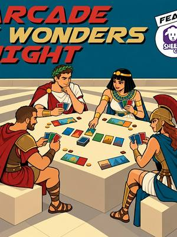
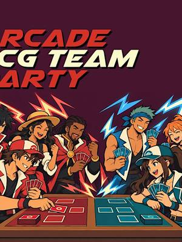
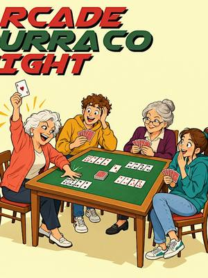
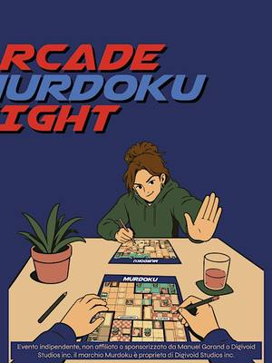
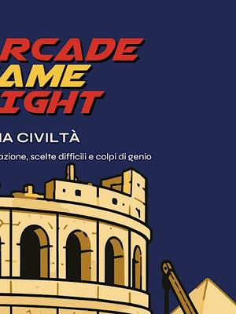
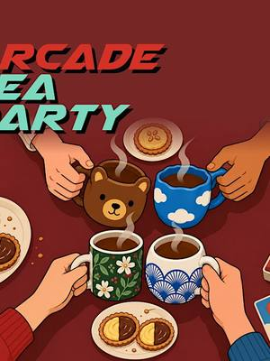
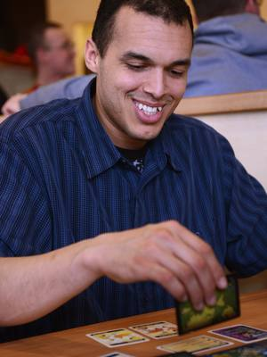
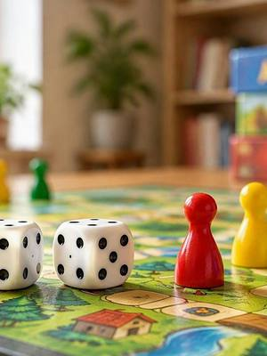
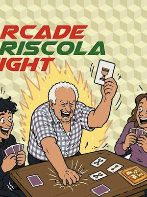

Tornei e serate di giochi a Torino
Tornei di carte e scacchi, serate di giochi da tavolo, giochi di ruolo e cacce al tesoro a Torino e dintorni.
Cerca tutti i workshop15 attività in programma · aggiornato il 20 novembre 2026

ven20novGiochiTorneo di 7 Wonders: serata di cartevenerdì 20 novembre, 20:00–23:30Lingotto (TO) · Gratiscon Arcade
sab21novGiochiTCG Team Party: sfide di carte a squadresabato 21 novembre, 12:00Lingotto (TO) · Gratiscon Arcade
mer25novGiochiBurraco Night: torneo a coppiemercoledì 25 novembre, 18:30–23:30Lingotto (TO) · Gratiscon Arcade
gio26novGiochiMurdoku Night: enigmi di logicagiovedì 26 novembre, 20:00–23:30Lingotto (TO) · Gratiscon Arcade- ven27novGiochiAperiCrime: chi ha ucciso Cenerentola?venerdì 27 novembre, 19:15–21:00Crocetta (TO) · 25 €con Aula44
- ven27novGiochiLibrary Crime: cena con delittovenerdì 27 novembre, 19:30–23:30Cuneo (CN) · Gratiscon Biblioteca 0-18 di Cuneo con Noau Officina Culturale

ven27novGiochiGame Night: giochi di civiltàvenerdì 27 novembre, 20:00–23:30Lingotto (TO) · Gratiscon Arcade
sab28novGiochiTea Party: tè e giochi da tavolosabato 28 novembre, 16:00–19:30Lingotto (TO) · Gratiscon Arcade
sab28novGiochiTorneo di Cranium: sfida a squadresabato 28 novembre, 16:30San Salvario (TO) · 10 €con Mosca Bianca di Gaia Sandrelli- dom29novGiochiSburrachiamo: serata di burracodomenica 29 novembreSan Salvario (TO)con Korova Wine Bar

mar1dicGiochiGaming: giochi da tavolo in bibliotecamartedì 1 dicembre, 16:00–17:30Centro (TO) · Gratiscon Biblioteca della Regione Piemonte
mer2dicGiochiBriscola Night: torneo di briscola chiamatamercoledì 2 dicembre, 18:30–23:30Lingotto (TO) · Gratiscon Arcade- dom6dicGiochiLega Commander: torneo di Magicdomenica 6 dicembre, 14:30–19:30Novara (NO) · 10 €con Giocatori dalle Risaie
 datada definireAltroCascina Roccafranca: corsi della stagioneData da definireMirafiori (TO)con Cascina Roccafranca
datada definireAltroCascina Roccafranca: corsi della stagioneData da definireMirafiori (TO)con Cascina Roccafranca- ognigioGiochiScacchi in Aiuola: partite all’apertoOgni giovedì, 17:00San Salvario (TO)con Alfiere Campoverde per Casa del Quartiere di San Salvario